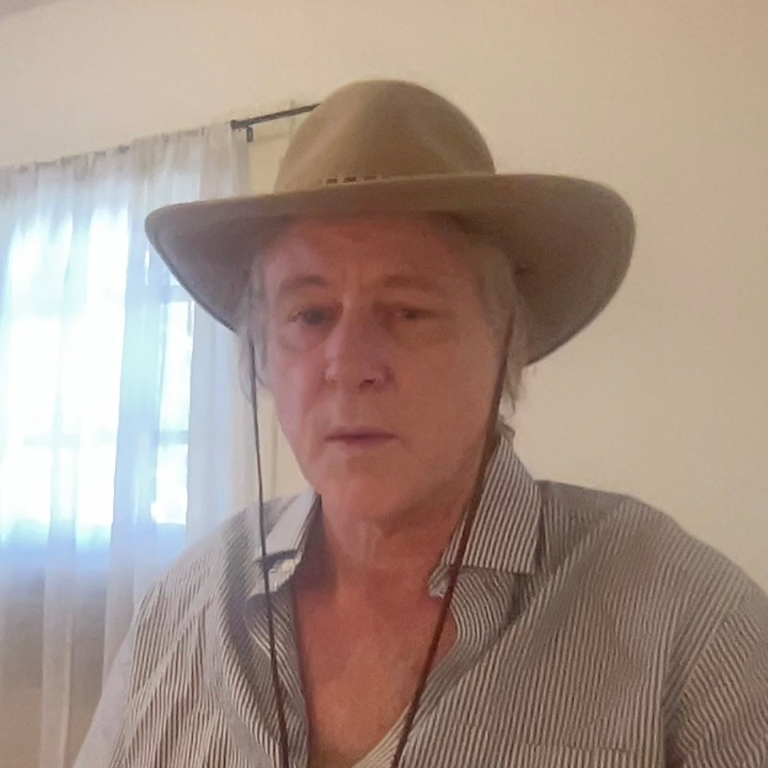

About Us
About Us

Ian Beardsley studied physics at The University of Oregon and worked in astronomy For four years at the state observatory, Pine Mountain Observatory in the high desert East of Bend, Oregon. His name appears on several papers in the Astrophysical Journal.
The Sixfold Unfolding of th... by Ian Beardsley
A Proposal In Exoanthropology by Ian Beardsley
The Sixfold Unfolding of th... by Ian Beardsley
The Sixfold Unfolding of th... by Ian Beardsley
Life As Part Of A Cosmic Pr... by Ian Beardsley
The Central Role of the Uni... by Ian Beardsley
A Precise Theory for the Pr... by Ian Beardsley